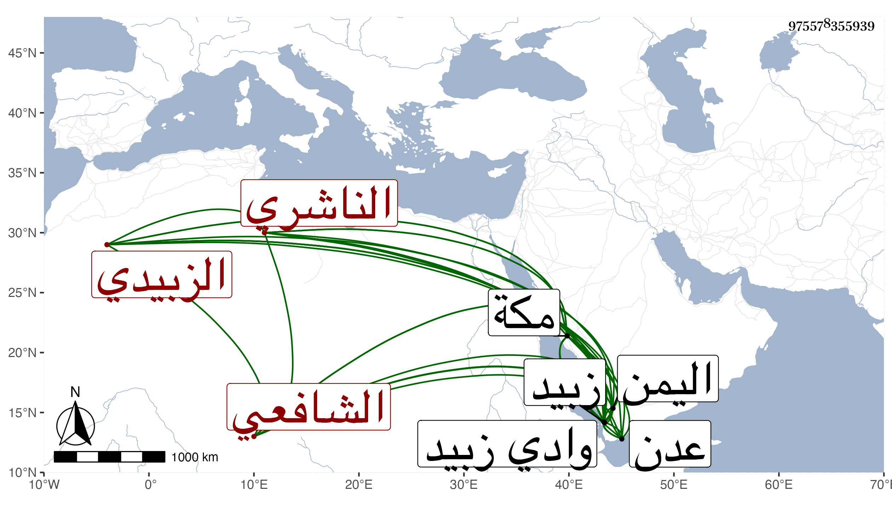

0902Sakhawi.DawLamic.ITO20230111-ara1.EIS1600.975578355939
Biography ID: 975578355939
630
حمزة بن عبد الله بن محمد بن علي بن أبي بكر التقي أبو العباس بن العفيف ابن الجمال بن قاضي الأقضية الموفق الناشري الزبيدي الشافعي قريب الجمال محمد الطيب بن أحمد . ولد في ثالث عشر شوال سنة ثلاث وثلاثين وثمانمائة بنخل وادي زبيد من اليمن ، ونشأ بزبيد فحفظ القرآن والشاطبيتين وألفية ابن مالك والثلث الأول من الحاوي الفرعي ، وتلا بالسبع أفرادا إلا الحمزة وورش فلم يقرأ لهما من ص ، كل ذلك على محمد بن أبي بكر بن بدير الزبيدي المقرىء ، وجمعا إلى الانعام على العفيف عبد الله بن الطيب الناشري وبحث في الشاطبية على الشهاب الشوايطي وكذا في منظومة السكاكيني الواسطي بل تلا عليه بعض القراءات وأجازه ، وأخذ الفقه عن قريبه الطيب سمع عليه تأليفه الايضاح وعن عمه أحمد بن محمد الناشري وغيرهما كالعفيف بن الطيب بل قرأ على البرهان بن ظهيرة بمكة وقاضي عدن أبي حميش محمد شارح الحاوي المتوفي بعيد الستين ، وقرأ النحو على قاضي الحنفية بزبيد صديق بن المطيب وسمع على أبيه وقريبه الطيب والزين أحمد الشرجي والتقي بن فهد ووالده النجم عمر وآخرين وأجاز له الزين عبد الرحيم الاميوطي والبرهان الزمزمي وابن الهمام وأبو السعادات بن ظهيرة والفقيه عمر ابن محمد الفتي ، وتردد لمكة كثيرا ولقيني بها في سنة ست وثمانين فأخذ عني ومدحني وكتب لي من نظمه أشياء وأفادني نبذة من تراجم أهل بلده ، وكتبت له إجازة حافلة واستجازني لبنيه وغيرهم سيما من كان من الناشريين ، ووردت على مطالعاته تتضمن أسئلة وكأنه متوجه لجمع أشياء وهو فاضل يقظ حسن المذاكرة كثير المحاسن مبالغ في شأني ولم تنقطع كتبه عني وأسئلته مني جوزي خيرا .
